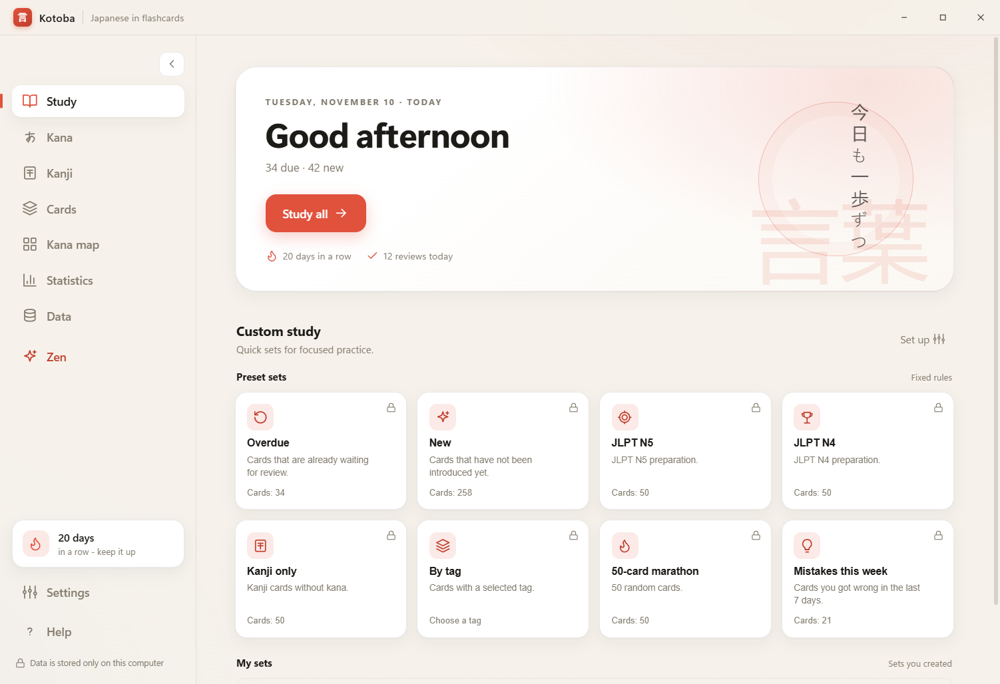
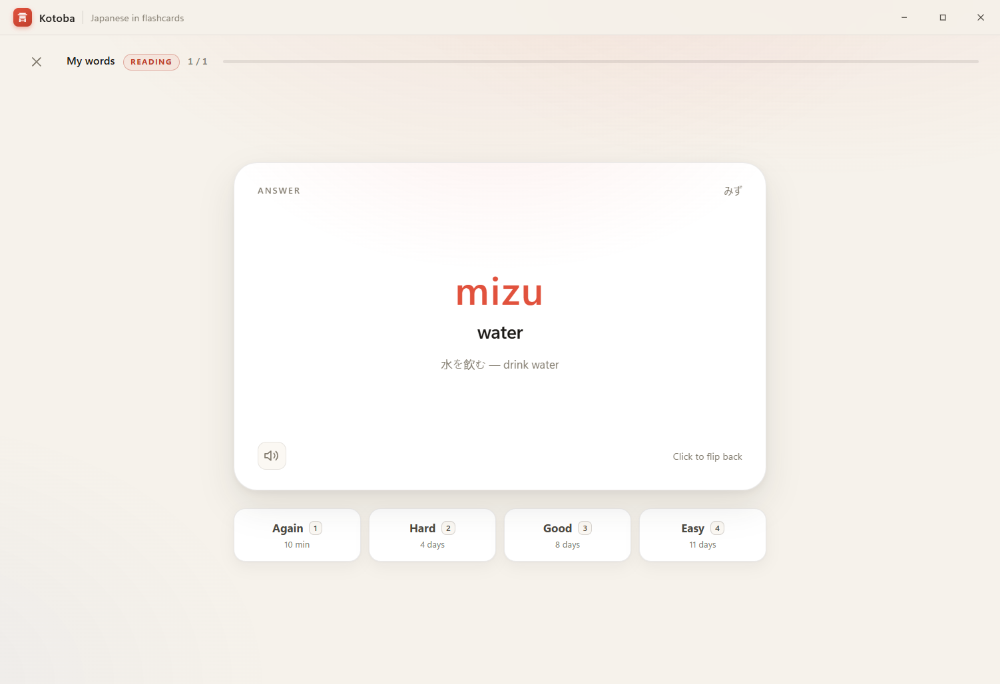
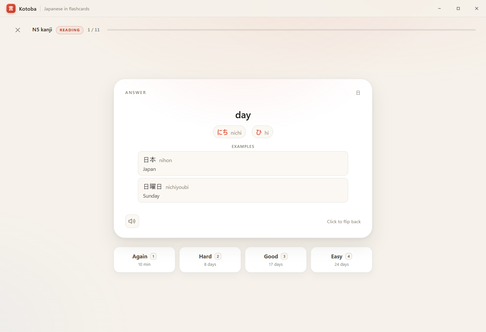
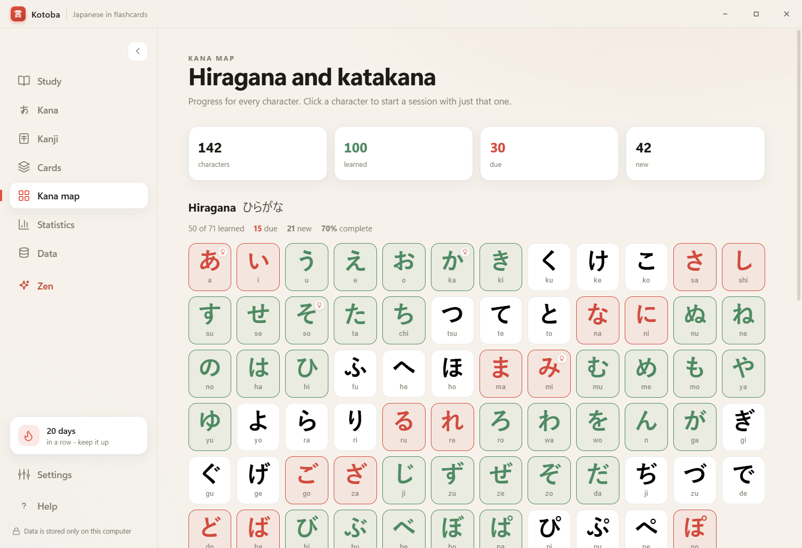
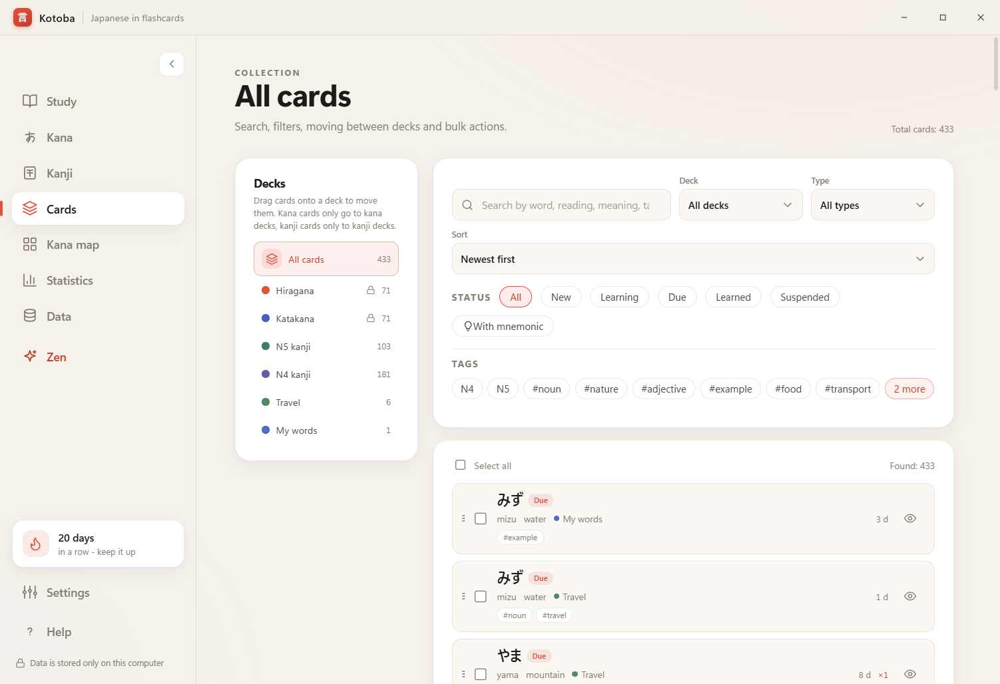
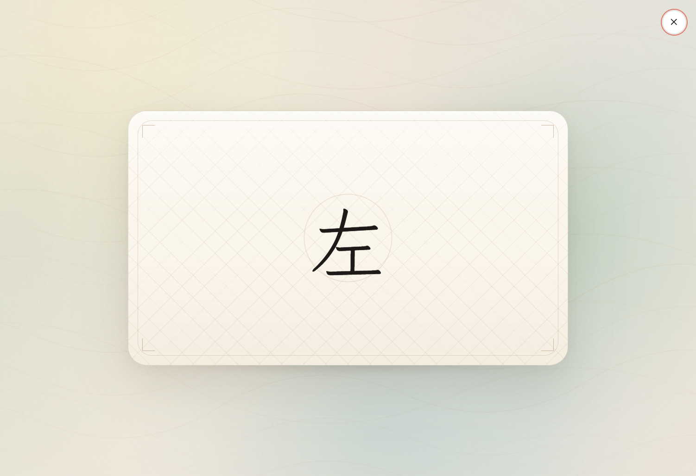
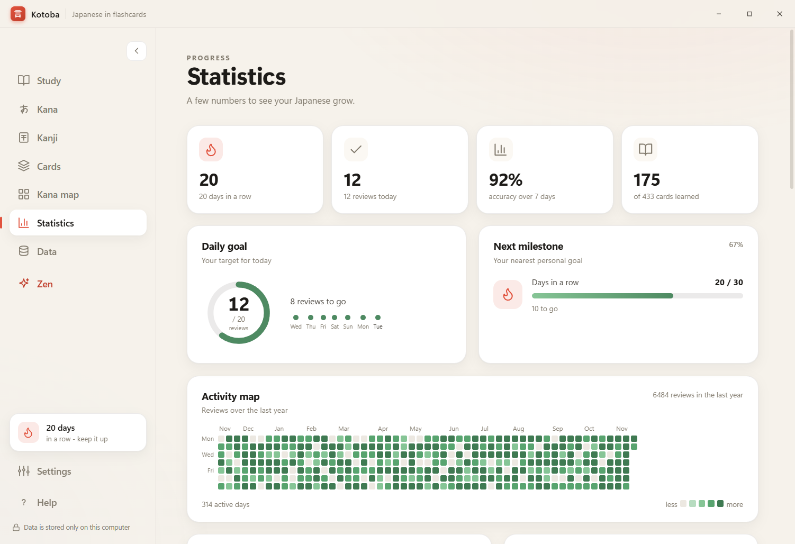
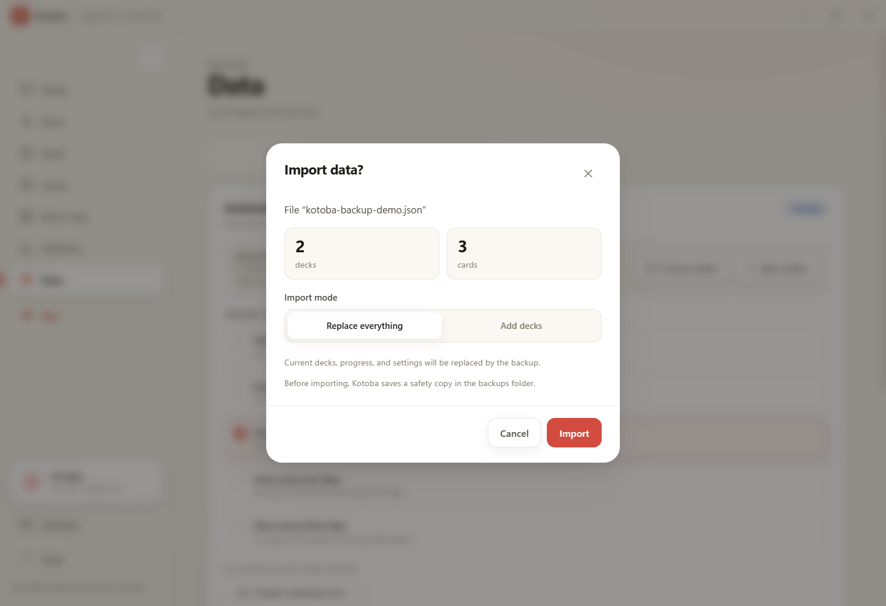

All local
Decks, progress and history live in ordinary files on your computer.
A desktop app for learning Japanese
Hiragana, katakana, N5 and N4 kanji, your own decks and quiet reviews. Everything works offline and stays on your computer.

A small app that respects your time
Kotoba doesn't rush you. It shows a card, waits for your answer and comes back when it's time to review. No feeds, no notifications, no hurry.
Decks, progress and history live in ordinary files on your computer.
Fonts and data are already inside. The network is only needed to check for updates.
A daily goal, new cards in small portions, breaks and Zen mode.
01 · Study
In reading mode the card shows the Japanese side. You recall the reading and meaning, turn it over and choose how easy it was. “Again” brings the card back after a few cards, “Good” — after a few days. New words arrive in small portions.

every card comes back at the right time
02 · Kana and kanji
Inside are hiragana and katakana, N5 and N4 kanji. Every sign has a reading, a meaning and examples. The kana map shows what you already know, what is due for review and what is still ahead.

one sign — a whole story

100 of 142 signs are already familiar. Red ones are due for review, pale ones are still ahead.
03 · Your decks
Create a deck for a textbook, a trip or a favorite song. Add words, readings, translations, notes and tags. On the Cards screen you can search, filter, move cards between decks and mark what you already know.

everything in its place
04 · Two modes
In reading mode you see the Japanese text and recall its reading and meaning. In writing mode it's the other way around: you see the meaning and write the Japanese word yourself. You can adjust the difficulty: with a hint or without.
The normal writing mode shows the transcription; the hard one leaves only the meaning — and you recall everything yourself.
05 · Zen
A full-screen mode with no interface. The card shows the Japanese side, turns over after ten seconds, and after another ten it fades away to make room for the next one. Start it manually or let Kotoba turn it on after a pause.
Esc — leave and return to the usual screen.

the silence between cards
06 · Statistics
Your streak, accuracy, activity calendar, forecast and progress across decks. Not for competition — to notice how your memory changes and slow down in time.

small steps add up to a path
07 · Your data
Kotoba stores everything in ordinary JSON files on your computer. Backups can be made manually or on a schedule, and if a file gets corrupted, the app will offer to restore it and won't silently replace your data.

check first, then import
.bak if a file is damaged08 · Details
Small details that help you practice every day.
Light, dark or system — your choice.
The interface switches in settings.
Japanese text is read by a system voice.
Cards from a spreadsheet — no manual retyping.
Space, 1–4, Ctrl+Z, Esc.
Checked at launch and from settings. No auto-download.
Nine step-by-step guides — from kana to backups.
Reviews, minutes, a day streak and personal milestones.
Ten cards in the morning over a cup of tea. Mistakes to revisit in the evening. Ordinary life in between.
Kotoba doesn't ask for attention. It waits for you to come back.
Download
Free, offline, no account. Installer for Windows x64.
The installer is unsigned — Windows SmartScreen may show a warning. Your data and settings are kept when updating.